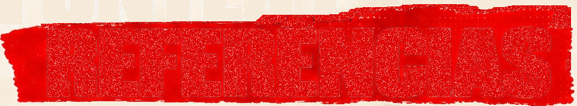
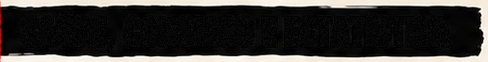
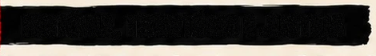
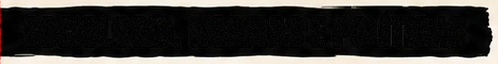
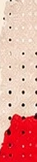
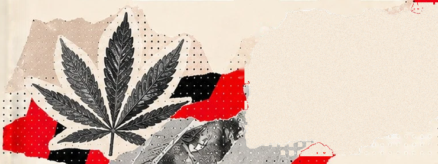

SOB EFEITO
PÁGINA 19
FONTES E REFERÊNCIAS
Documentos e estudos que sustentam esta edição.
1SAÚDE, CONSUMO E ESTATÍSTICA
- OMS · Drugs (psychoactive); Alcohol (2024).
- UNODC · World Drug Report 2026 — estimativas de 2024.
- UNIFESP/UNIAD · LENAD III, cannabis e outras substâncias (2025).
- CECI, M. · Pesquisa FAPESP, edição 360 (2026).
- IBGE · PeNSE 2024 e PeNSE 2019.
- IBGE · Pesquisa Nacional de Saúde (2019).
- NUTT; KING; PHILLIPS · Drug harms in the UK. The Lancet (2010).
- OLIVEIRA; DEMARCO; ZANATTA · Alcohol and Alcoholism (2024).
- NIDA · Drugs, Brains, and Behavior.
2HISTÓRIA, TERRITÓRIO E JUSTIÇA
- SILVA; ZILLI; SOUZA · Proibicionismo no Brasil. Direito GV (2024).
- ALVES; PEREIRA · Cracolândia como problema público. Dilemas (2021).
- SEABRA et al. · LECUCA, 6ª onda, dados de 2024.
- PREFEITURA DE SÃO PAULO · Cenas abertas de uso de drogas (2025).
- VISÃO MUNDIAL BRASIL · A criança no centro (2017).
- IPEA · Perfil do processado por tráfico (2023).
- DUQUE; FRANÇA; SANTOS · 50 Shades of Guilt (2024).
- COELHO; MACIEL; MARTINEZ · Ipea, Discussion Paper 3116 (2025).
3SOCIOLOGIA, NORMAS E POLÍTICAS
- DURKHEIM · O Suicídio; Da divisão do trabalho social.
- BOURDIEU · A distinção.
- BECKER · Outsiders.
- GOFFMAN · Estigma.
- FOUCAULT · Vigiar e punir.
- WACQUANT · Os condenados da cidade.
- BARBOSA; ARRUDA · Consumo de drogas e Sociologia (2024).
- BRASIL · Leis nº 6.368/1976, 11.343/2006 e 8.069/1990.
- STF · RE 635.659 (2024); ANVISA · RDC nº 855/2024.
- UNICEF · Busca Ativa Escolar; OMS · SAFER; ONU · ODS 3.5.